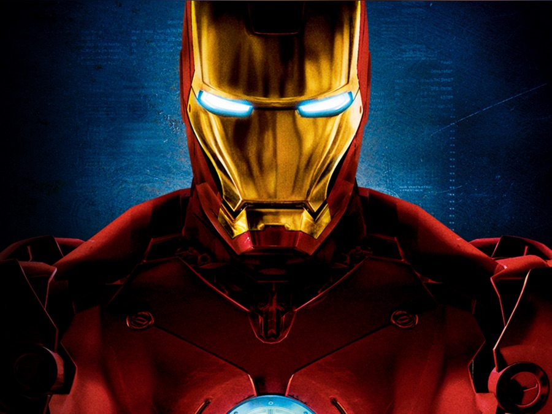

Un multimillonario, empresario e ingeniero,Tony Stark sufre una lesion en el pecho durante un secuestro en el que sus captores tratan de obligarlo a construir un arma de destruccion masiva El crea en su lugar una poderosa armadura para salvar su vida y escapar de su cautiverio.Luego utiliza la armadura para proteger al mundo como iron man A traves de su corparacion -Industrias Stark -- Tony ha creado muchas armas militares ,algunas de las cuales. junto con otros dispositivos tecnologicos de su invencion ,se han integrado en su armadura ayudandolo a luchar contra el crimen
Iron man ha hecho apariciones menores en series animadas ccomo:
Baez Garcia Pedro Antonio 